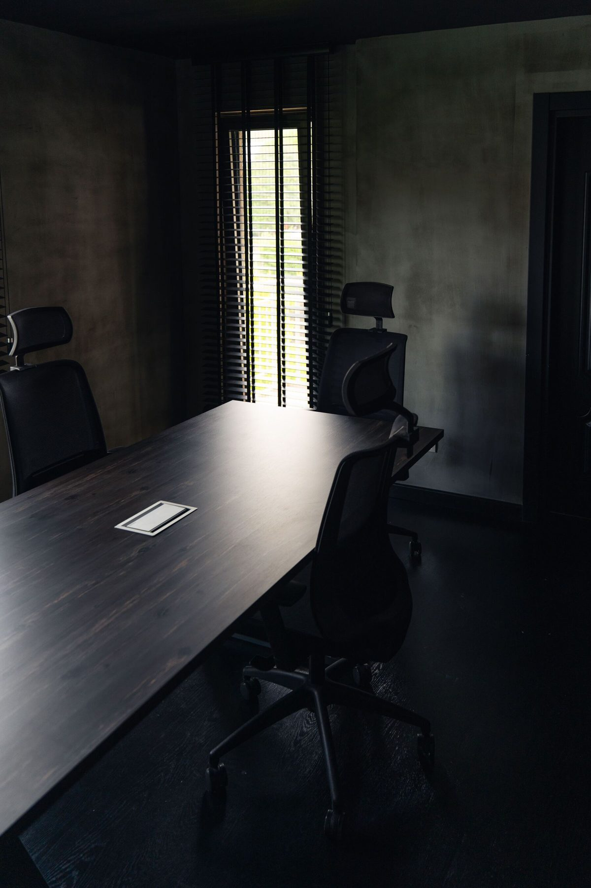
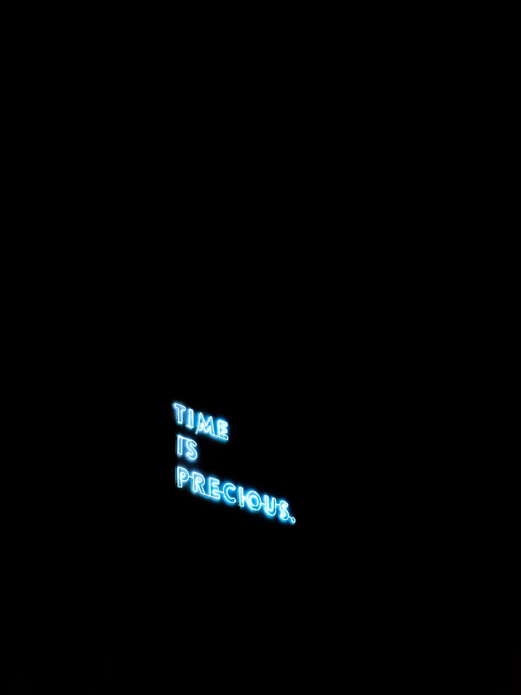

Led by someone who cares about the mission and knows better than to expect employees to feel the same way about a pay cheque. People show up to learn something, earn something or be respected, heard and motivated to succeed. Every one of those reasons is fair. Roughly 50 up to 2,000 people in, where internal comms is still a side task someone picks up between other jobs.
Internal communications consulting: Your last town hall was a wake.
The whole room went quiet.
Plenty of internal comms is noise the company calls important. Some of it earns the label. We help you cut through the rest by designing communication systems that reach people, move them and mean something. Whether you need a diagnosis, a full strategy or an ongoing partner, we operate at the level your organisation needs.

START WITH
The Autopsy
Internal Communications Audit · From €900
IN SHORT
Internal communications consulting for companies of 50 to 2,000 people where comms is still a side job: an audit of what lands, a playbook for what to say and where, and a fractional communications lead to run it. Remote-first, from Sweden, for teams in any time zone. Audits start from €900.
Robert Stănescu, founder · Updated October 2026WHO THIS IS FOR
Built for the scale-up that has outgrown ad hoc updates and is still waiting on its first comms hire.
Multi-location or hybrid and remote, where messages land differently depending on which office, or time zone, people sit in.
Growing fast enough that last year's comms habits, a Slack channel, an occasional email, are starting to crack: town halls feel flat, and people say they hear big news from LinkedIn before they hear it internally.
WHAT GOOD LOOKS LIKE
A message that survives the trip from you to them.
Picture the room where this happens: a dark conference table, one screen, a leader about to say something that matters. Whether that moment lands or dies in the room depends less on the words than on everything built around them, the channel, the timing, the trust already banked. That is the work: the system around the town hall deck that makes the message land.
WHY THE MAGIC COFFIN
Here's the problem, and here's the fix.
A message goes out. Half the company reads it three days late, from a manager who found out at the same time everyone else did. The town hall becomes background noise instead of real news, and the next announcement lands to a room that has already stopped listening. By the next announcement you are paying twice: once to send it, and again to convince a room that has learned to skim.
A background built for this exact problem
Years spent working across different departments, seeing first-hand how the same announcement lands completely differently in engineering than it does in sales. A social sciences background (anthropology, sociology, media and communication) turned into the actual skill of reading a room before it reacts.
Someone who's watched news land, badly and well
Years of crisis communications and hard announcements across 36 countries: who hears first, from whom and when, managers briefed before the all-hands and the 48 hours after. That judgement sits behind every message this pillar writes, from the first line of a script to the tone of the follow-up email.
ENGAGEMENTS
What we can help with
Every engagement starts with a free 30-minute call, where you get a straight answer including an honest read on fit.
Fixed project
start here
The Autopsy
Internal Communications Audit
From €900
2–3 weeks · ~15–20 hours
Something is off. Messages are landing flat. Town halls feel like theatre. Employees know less about the company than the LinkedIn page does. The Autopsy is where we lift the lid: assess what's working, what's dead and what's draining your culture. You get a sharp, honest report and a prioritised action roadmap.
Done looks like: a written map of where messages break down between you and the people meant to receive them, with your top vampire moments ranked, and a 30/60/90 roadmap your leadership team can act on the same week.
WHAT'S INSIDE
- Stakeholder interviews across 3–5 levels of the organisation
- Full audit of your channels, cadence, tone and governance
- Identification of your top "vampire moments": where comms is draining energy
- Written findings report (15–25 pages): clear, direct and free of corporate fog
- Live presentation and Q&A walkthrough (90 minutes)
- Prioritised 30/60/90-day action roadmap
The Autopsy is the natural starting point, and it shows you whether The Burial is the next step. Consider it an investment that pays for itself.
Book your Autopsy →
Fixed project
The Burial
Internal Communications Strategy & Playbook
From €2,250
5–7 weeks · ~40–50 hours
You know the problem. Now it's time to bury it properly and build something that lasts. The Burial is a full end-to-end Internal Comms transformation: we design your channel architecture, messaging framework, governance model and content calendar, then hand you a practical playbook your team can open and use on Monday morning. A working system, ready to run.
Done looks like: a channel architecture, a messaging framework and a content calendar live in your own tools, with your team running an all-hands, a newsletter and a cascade from the templates, unaided, before handover ends.
WHAT'S INSIDE
Book a free consultation →
- Extended discovery: cross-level stakeholder interviews + employee pulse survey
- Leadership communication style assessment
- Channel architecture design: what lives where, for whom, with what purpose
- Messaging framework and internal tone of voice guidelines
- Content calendar structure and governance model
- The Playbook: a practical, branded document covering the full system
- 3–5 ready-to-use templates (all-hands agenda, newsletter format, announcement, manager cascade)
- Measurement framework: which metrics matter, how to track them, what good looks like
- Full leadership presentation + 90-minute team training session
- 30-day post-delivery check-in call included
Monthly retainer
The Resurrection
Fractional Internal Communications Lead
From €900 a month
Minimum three-month commitment · ~14–20 hrs/mo
You need the judgement of a Head of Internal Comms, on demand, for a couple of days a month. The Resurrection puts a senior comms partner in your corner every month: writing, advising, measuring and iterating alongside your People team. Whether it's navigating a restructure, launching a new initiative or keeping the heartbeat of your organisation steady, we hold the pen.
Done looks like, every month: the comms calendar planned, the month's leadership messages and announcements drafted and a metrics report with engagement data and the recommendations that follow from it.
WHAT'S INSIDE
- Monthly strategy session with your People or Comms lead
- Comms calendar planning and prioritisation
- Writing and editing: all-hands content, leadership messages, newsletters, announcements
- Crisis and sensitive comms advisory (restructures, cultural moments, leadership changes)
- Intranet content management and optimisation
- Engagement campaign ideation and execution
- Monthly metrics report with engagement data and recommendations
The three-month minimum is a commitment to your results: real cultural change takes longer than four weeks, and we're building something that lasts.
Book a free consultation →THE WORK
Work in this area
Real work from in-house roles, sample deliverables and playbooks, each labelled for what it is.

CASEInternal Communications
Getting 60% of a global company to show up live
Town Halls across time zones and leadership messages, for a 36-country business.
~60%average live attendance

CASEInternal Communications
A four-story-a-month newsroom that reached 300K views
Around 50 internal stories a year in text, audio and video.
300K+page views a year

CASEInternal Communications
Rebuilding an intranet people can find their way around
A platform migration, new landing pages and navigation people can follow.
36countries on one intranet
FAQ
Frequently asked questions
Got a different question? That's what the free consultation is for.
Will this replace our need for a comms hire eventually?
−It depends on your trajectory.
The Autopsy and Burial are designed to leave you with a system your team can run independently.
The fractional retainer exists for the common middle ground: senior comms judgement on a regular basis, at a level still short of justifying a full-time hire.
Do you write the actual messages, or just advise on strategy?
−Both, depending on the tier.
The Autopsy diagnoses and recommends.
The Burial and the fractional retainer both include hands-on drafting: scripts, announcements, cascade materials, real material your team can use directly, alongside the strategy itself.
For a pay rollout, the all-hands script, staff explainer and manager pay scripts sit with Pay Transparency.
What if the audit turns up something politically sensitive?
−We handle it the way we handle the report itself: directly, plainly and privately with you before anything reaches a wider audience.
Individual interviewees stay unquoted by name throughout.
Can this run during an active reorg or comms crisis?
−Yes. It's often when the gaps in a comms system get exposed.
If the crisis leans more HR than comms, The Vigil under Fractional HRBP is the better fit. Ask on the discovery call and we'll help you tell which.
How long does an internal communications audit take?
−The Autopsy runs two to three weeks: around 15 to 20 hours of your team's time across interviews and the findings walkthrough.
The Burial, the full strategy and playbook, runs five to seven weeks.
What's the actual deliverable, not just the process?
−A written findings report you can hand straight to your leadership team.
For the Burial, also a practical playbook with ready-to-use templates: an all-hands agenda, a newsletter format, an announcement structure, a manager cascade script.
Real things your team opens on a Monday morning and puts to work, rather than a deck that sits in a folder.
What does an internal communications audit look at?
−Where messages break down between you and the people meant to receive them: channel overload, manager cascade failures, one-way broadcasts standing in for real two-way communication.
And the specific moments people stop listening. Interviews surface this, in a way a survey template rarely can.
When the break sits with managers, Manager Enablement gives them a briefing template for passing news on within 24 hours, and a place to practise it.
LATEST THINKING
From the blog
PEOPLE EXPERIENCE07 Sep 2026
Volkswagen to Cut 50,000 Jobs: Employees More Upset with Comms than Job Loss
Ask the workforce what upset them most about the whole affair, and the job losses do not come first.

PEOPLE & HR COMPLIANCE08 Sep 2026
The Immigration Rules Changed on 3 September. Who Told Your People?
New UK visa rules landed. Did you let your employees know?

PEOPLE & HR COMPLIANCE31 Aug 2026
Sweden just put a price on telling people too late
A Swedish court fined an employer for late news.
Not sure where to start?
Lift the lid first.
Book a free 30-minute consultation. We'll identify your biggest vampire moment and tell you honestly whether we're the right fit to bury it.
LID OFF